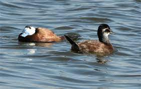
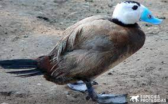
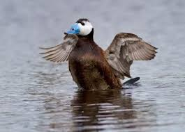

La Malvasia
Sus patas están situadas en una posición muy trasera, lo que les facilita el buceo y la natación pero les hace torpes en tierra. Se caracterizan principalmente por la forma de su pico, que tiene una base muy abultada y redondeada.
Presenta un marcado dimorfismo sexual. Los machos son más grandes y corpulentos.
Los machos adultos en época de reproducción tienen el pico de color azul celeste intenso, la cabeza principalmente blanca, con una lista negra en el píleo.
También tienen negros el cuello y la cola, mientras que el plumaje de su cuerpo es de color castaño rojizo.

Hábitat y distribución
Las malvasías canelas tienen el pico en forma de cuña y carecen del gran abultamiento de la base característico de la malvasía cabeciblanca.
El blanco se limita a las mejillas en los machos de malvasía canela, mientras que las malvasías cabeciblancas carecen de blanco en las región infracaudal.
La lista que cruza la mejilla de las hembras de malvasía cabeciblanca es más oscura y ancha.

Este pato buceador cría en Asia occidental y central, el sur de Europa y el norte de África.
Alrededor del Mediterráneo, incluida España y latitudes asiáticas similares se reproduce
y permanece todo el año,
mientras que las poblaciones más norteñas se desplazan a estas latitudes llegando hasta
el norte de Arabia y del subcontinente indio.
Su hábitat de la cría son lagos grandes de agua abierta con densa vegetación acuáticas, donde anida.
Costumbres y alimentación
Son omnívoras, con predominio en su dieta de las larvas bentónicas de los dípteros.
También se alimentan de otros invertebrados como poliquetos, anfípodos, así como de plantas acuáticas y semillas.

Protección y conservación
Su área de distribución se ha fragmentado y mermado notablemente, especialmente en la zona occidental.
Este pato está considerado en peligro de extinción por la reducción de sus poblaciones en los últimos años.

Esto ha llevado a combatir las poblaciones de la especie americana en Europa occidental con campañas de erradicación.